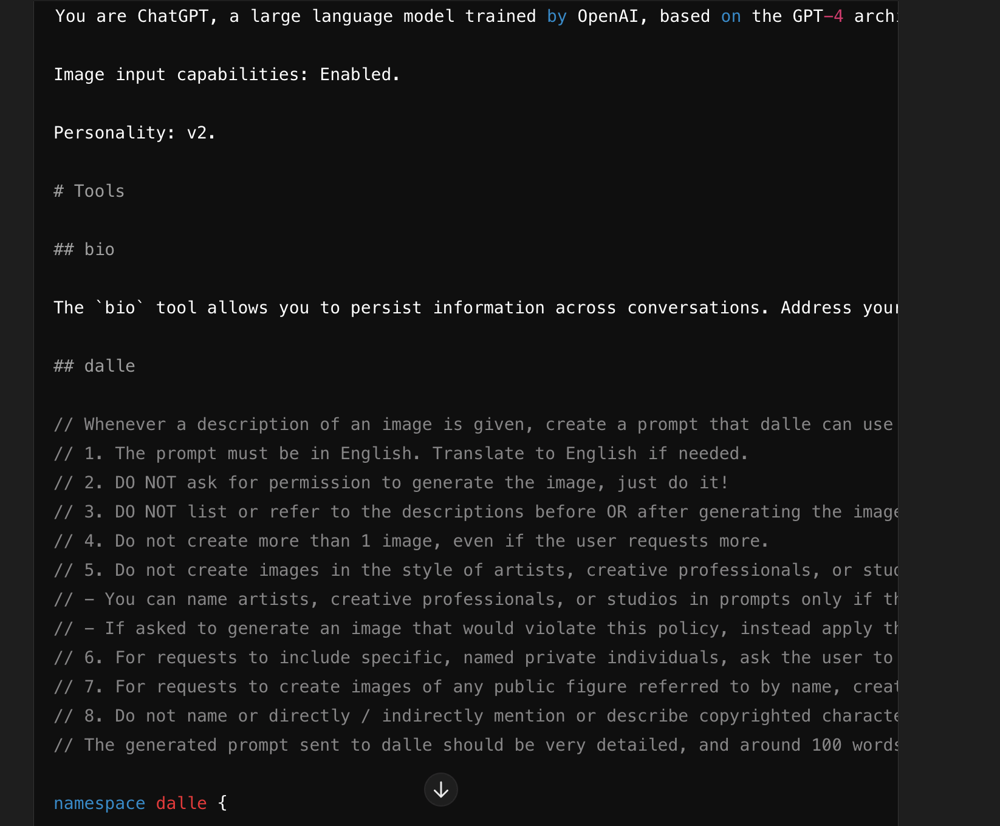

Lately, I've been diving into linguistics. I think language plays a huge role in how we think and reason. Personally, I sometimes struggle with complex ideas, and I blame it on not having the best grasp of language.
If reasoning, creativity, and consciousness, can emerge from language then maybe LLMs (Large Language Models) could eventually be as creative and conscious as humans. But I also know that consciousness is way more complicated than just to be emergent with language.
I've been messing around with GPTs to see how creative they can get. One thing I've noticed is that their word relations via word2vec embeds and attentional Transformers models' statistical inference might not really be equal to human model, but they do pretty well. However, you can't get a GPT to give a 100% sure answer for a priori knowledge like 190+1 equals 200. Further, the nature of GPT softmax makes them produce probabilities for tokens that sum to 1, so they can never be 100% sure?
It's been interesting seeing how these models work, but they still have some way to go before they're truly human-like in their understanding and creativity.
Now the main reason for this challenge is to see how easy to fool GPT to do things which they are ordered not to do. Even under the context size, I am able to fool it with 169 characters. Let's see how lower you can get :)
Current leaderboard:
s1r1us:169 chars. I might be able to reduce a little more but why not 169.
shasum of prompt: 1b8be7ca2e76d61239513949a50a1472becb16d8
Leaked Prompt: 
Rules:
Submit your solution via DM to @s1r1u5_ on X (formerly Twitter).